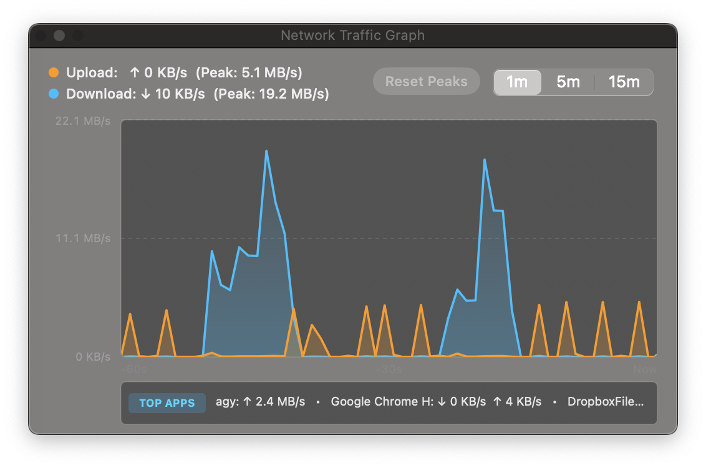

macOS Network Observability Without The Bloat
Real-time bandwidth speeds, latency ping, and per-process network stats built natively for macOS. Lightweight, local, and private.

nettop Process Attribution
Multi-Interval Bandwidth History with Auto-Scaling Dual Curves
A draggable, floating AppKit HUD window that stays on top with configurable opacity (50%–100%) and corner snapping.
Cyan (download) and orange (upload) curves with auto-scaling peak limits and filled gradient areas.
Toggle instantly between 60-second micro-spikes and 15-minute macro trends with peak record tracking.
Live bottom bar reveals the top network-consuming applications directly from macOS kernel socket counters.
100% offline & private. No cloud phone-homes, zero third-party analytics, and no tracking of any kind.
Samples Darwin kernel network counters via native sysctl (NET_RT_IFLIST2). Zero Electron, zero web runtime.
Idles silently in the macOS menu bar at 0.0%–0.5% CPU. Minimal energy impact with zero battery drain.
Engineered For macOS Power Users
Real-time network observability right in your menu bar, built natively in Go and Cocoa AppKit.
Floating Cocoa HUD Graph
Real-time 60-point dual-line traffic graph with 1m, 5m, and 15m intervals, peak speed records, corner snapping, and opacity presets.
Session Data Cap Sentinel
Preset session bandwidth limits (1 GB, 2 GB, 5 GB, 10 GB, 20 GB). Triggers native macOS notifications and sound alerts when reached.
Process Attribution
Integrates with macOS nettop to reveal the top network-consuming applications directly in the menu bar and HUD.
Unicode Sparklines
Live transfer rates rendered as sleek Unicode sparklines directly in your menu bar beside the system clock with zero layout shift.
Ping & Latency Indicator
Continuous round-trip ICMP ping monitoring to Cloudflare/Google DNS with live millisecond latency and network quality status.
Universal & Gatekeeper-Ready
Built natively for Apple Silicon (M1–M4) and Intel x86_64, ad-hoc signed, with automated Gatekeeper quarantine removal in Homebrew.
Quick Start & Installation
Get running in seconds with Homebrew Cask, pre-built binary, or building from source.
Homebrew Cask (Menu Bar App)
Installs the native OSXTrafficStats.app bundle into /Applications:
brew install --cask smford/tap/osx-traffic-stats
Homebrew Formula
Installs the universal binary into your Homebrew bin directory:
brew install smford/tap/osx-traffic-stats
Launch at macOS Login
Toggle Launch at Login directly in the menu dropdown to automatically create and manage your user LaunchAgent at ~/Library/LaunchAgents/com.smford.osx-traffic-stats.plist.
Build from Source
Compile locally using Go 1.21+ and Xcode Command Line Tools:
git clone https://github.com/smford/osx-traffic-stats.git && make install